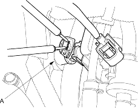

- Try to start the engine.
Does the engine start?
YES |
- Go to step 2. |
NO |
- Go to step 6. |
- Turn the ignition switch OFF. Remove the air cleaner (see page 11-146).
- Disconnect each injector connector individually.
- Install the air cleaner, and inspect the change in the idle speed.
- If the idle speed drop is almost the same for each cylinder, the fuel injectors are normal.
- If the idle speed or quality remains the same when you disconnect a particular injector, replace the injector and retest (see page 11-113).
- Check the clicking sound of each injector by means of a stethoscope when the engine is idling.
- If any fuel injector fails to make the typical clicking sound, check the sound again after replacing the injector (see page 11-113).
- If clicking sound is still absent, check the following.
- Whether there is wire breakage or poor connection in the YEL/BLK wire between the PGM-FI main relay and the junction connector.
- Whether the junction connector is open or corroded.
- Whether there is wire breakage or poor connection in the YEL/BLK wire between the junction connector and the injector.
- Whether there is any short-circuiting, wire breakage or poor connection in the wire between the injector and the ECM/PCM.
- If all is OK, the test is complete.
- Turn the ignition switch OFF.
- Remove the air cleaner (see page 11-146).
- Remove the injector connector.
- Measure the resistance between injector (A) terminals No. 1 and No. 2.

Is there 10-13 ohms?
YES |
- Go to step 10. |
NO |
- Replace the injector (see page 11-113). |

- Check the fuel pressure (see page 11-131).
- If the fuel pressure is as specified, check the following:
- Whether there is wire breakage, or poor connection in the YEL/BLK wire between the PGM-FI main relay and the junction connector.
- Whether the junction connector is open or corroded.
- Whether there is wire breakage, or poor connection in the YEL/BLK wire between the junction connector and the injector.
- Whether there is any short-circuiting, wire breakage or poor connection in the wire between the injector and the ECM/PCM.
- If the fuel pressure is not as specified, recheck the fuel pressure (see page 11-131).